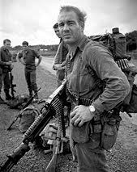

|
Od 1969 toczy³y siê w Pary¿u rokowania pokojowe Stanów Zjednoczonych z rz¹dem pó³nocnowietnamskim, zakoñczone podpisaniem paryskich uk³adów pokojowych w styczniu 1973. Po roku 1969 USA rozpoczê³y proces stopniowego wycofywania swoich oddzia³ów, który zakoñczy³ siê dwa miesi¹ce po podpisaniu uk³adu w Pary¿u, 29 marca 1973. W tym samym czasie Stany Zjednoczone podjê³y ogromne wysi³ki, by wzmocniæ armiê Po³udniowego Wietnamu, przekazuj¹c jej du¿e iloœci uzbrojenia i zaopatrzenia, w procesie zwanym „wietnamizacj¹”. Wysi³ki te przynios³y efekty, gdy w 1972 ARW, z minimalnym udzia³em amerykañskich si³ l¹dowych, lecz dalej z silnym amerykañskim wsparciem lotniczym, zdo³a³a odeprzeæ powa¿n¹ ofensywê si³ komunistycznych. Równolegle lotnictwo USA przeprowadzi³o zmasowane naloty na Hanoi i Hajfong. „Wyczyœcimy cêtkê tygrysa” oznajmi³o dowództwo armii po³udniowowietnamskiej, rozpoczynaj¹c operacje zaczepne przeciw partyzantom – przynios³y one ograniczone rezultaty, a pod kontrol¹ NFW nadal znajdowa³o siê
½
terytorium.
 W marcu 1975 roku rozpocz¹³ siê ostateczny atak armii pó³nocnowietnamskiej. By³o to ju¿ po aferze Watergate i ust¹pieniu prezydenta Richarda Nixona. Niektórzy historycy, jak Stanley Karnow czy Lewis Sorley, twierdz¹, ¿e gdyby Nixon pozosta³ u w³adzy, to z du¿ym prawdopodobieñstwem Stany Zjednoczone udzieli³yby przynajmniej wsparcia lotniczego si³om ARW, dziêki temu daj¹c jej szansê powtórzyæ sukces z roku 1972. Pod s³abym przywództwem tymczasowej administracji Geralda Forda takie posuniêcie nie wchodzi³o w grê. Bez amerykañskiego lotnictwa sytuacja 200-tysiêcznej ARW sta³a siê beznadziejna, mimo ¿e posiada³a pewn¹ przewagê w uzbrojeniu i sprzêcie w postaci 2000 czo³gów i pojazdów opancerzonych, 500 samolotów bojowych i 1500 œmig³owców (po stronie przeciwnej walczy³o 300 tysiêcy ¿o³nierzy i partyzantów NFW, wspieranych przez kilkaset czo³gów, ale bez lotnictwa). Da³ siê jednak zauwa¿yæ upadek morale i szerz¹ce siê dezercje, na co ogromny wp³yw mia³ brak amerykañskich samolotów w powietrzu. 25 marca komuniœci zajêli Hu?. W kwietniu genera³ Nguy?n Vãn Thi?u poda³ siê do dymisji i wyemigrowa³, a ARW uleg³a rozk³adowi. 30 kwietnia po krótkich walkach pad³ Sajgon. Republika Wietnamu przesta³a istnieæ.
|